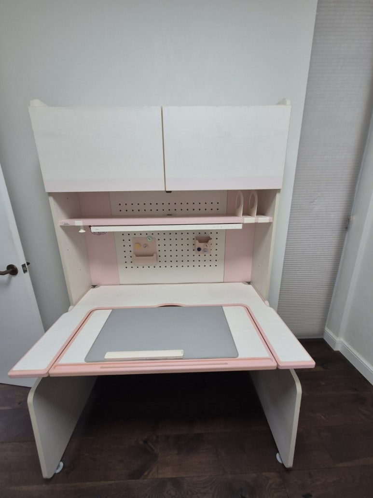
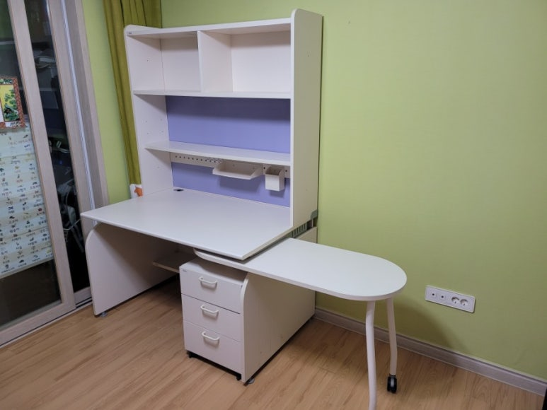
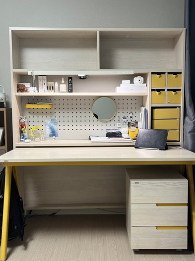
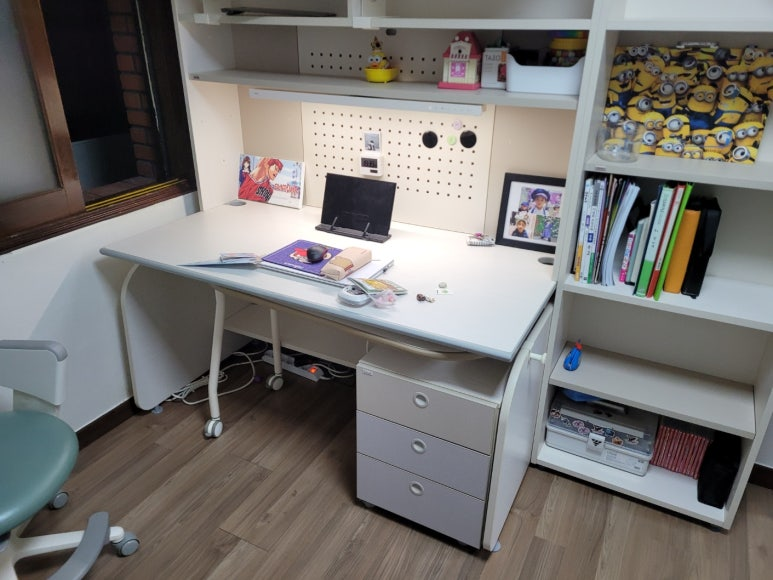
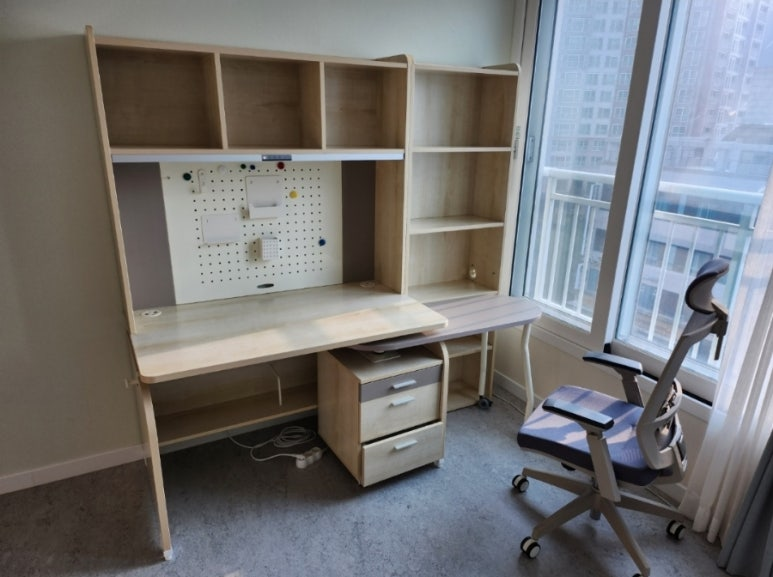
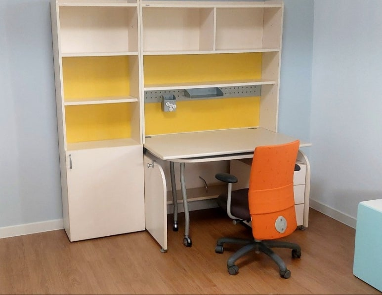
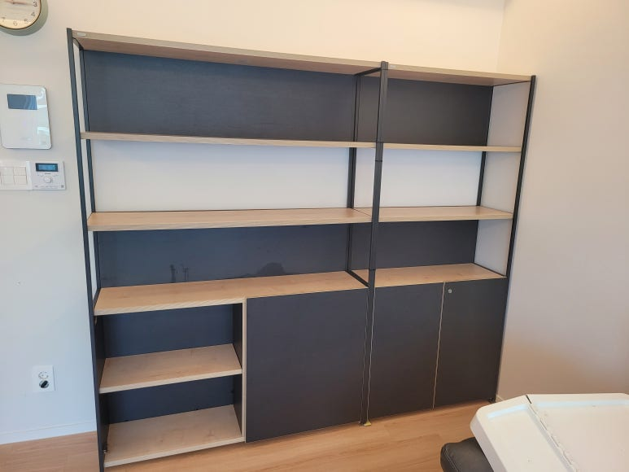
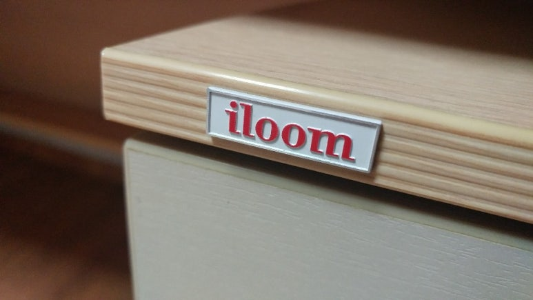

일룸 책상 이전설치
책상·책장 세트 해체부터 재조립까지
아이 공부방을 옮기거나 이사를 하면서 일룸 책상과 책장을 함께 옮겨야 하나요? 상부장과 책장이 연결된 일룸 책상 세트는 통째로 옮기기 어려워요. 코니처는 일룸 책상과 책장을 해체해서 옮기고, 새 방에서 다시 조립해 드려요. 공부방 가구는 평균 경력 10년 이상의 지역 기사님이 직접 해체하고 조립해요.

일룸 책상·책장 이전설치
세트 기준 13만 원부터
표시된 금액은 최소 시작 금액이에요. 가구 크기와 수량, 이전 거리, 층수, 엘리베이터 사용 여부 등 작업과 현장 상황에 따라 금액이 달라져요. 정확한 금액은 사진을 보고 문자로 안내드려요.
현금가 기준이며, 카드 결제나 현금영수증이 필요하면 부가세가 별도예요.
문자 상담 신청하기일룸 책상·책장, 옮길 때 살펴야 할 것
일룸 책상은 상부장, 옆 책장, 이동식 서랍장이 함께 구성된 세트가 많아요. 높이 조절 책상이나 전동 모션데스크처럼 기능이 있는 책상도 있어서, 옮기기 전에 구성부터 확인해요.
- 상부장과 연결 책장책상 위 상부장, 옆에 붙은 책장은 연결 부위를 풀고 나눠서 옮겨요.
- 높이 조절·각도 조절 상판아이 키에 맞춰 높이를 바꾸는 책상, 상판 각도가 바뀌는 책상은 조절 부품까지 함께 챙겨요.
- 모션데스크·데스커전동 모션데스크나 데스커 사무용 책상은 모델에 따라 분리 방법이 달라서 사진으로 먼저 확인해요.
- 새 방의 벽 길이책상과 책장을 나란히 놓던 구성이 새 방 벽 길이에 맞지 않을 수 있어요.
일룸 책상 이전설치 과정
-
해체
책상 위 상부장을 먼저 내리고, 옆 책장과 이어진 볼트를 풀어 하나씩 나눠요.
-
포장과 운반
나눈 판재와 상판은 포장한 뒤 새 공부방으로 옮겨요. 다른 집으로 가는 이사와 집 안 방간이동 모두 맡아요.
-
재조립
새 방에서 책장과 책상을 다시 세우고 상부장을 연결해요.

-
마무리
선반과 서랍을 끼우고 높이 조절이나 각도 조절이 제대로 되는지 확인한 뒤 마무리해요.

책상 세트 작업 순서와 방법은 가구 구성과 현장 상황에 따라 기사님과 상담 후 진행돼요.
연결 책장을 따로 두고 싶다면
책상과 책장을 다른 벽에 나눠 두거나, 연결형 책장을 떼어 따로 쓰고 싶을 때가 있어요. 일룸 책장은 연결형이 많아서 구성에 따라 나눠 설치할 수 있는 경우가 있어요. 지금 쓰는 모습과 새 방 사진을 함께 보내주시면 상담할 때 가능한지 확인해 드려요.
책상 세트 견적에 필요한 정보
- 공부방 사진책상과 상부장, 옆 책장이 함께 보이게 한 장, 서랍장이 보이게 한 장 찍어 주세요.
- 구성책상, 책장, 서랍장이 각각 몇 개인지, 모션데스크인지 알려주세요.
- 이동 정보같은 집 안 방간이동인지, 다른 집으로 가는지 알려주시고 지역과 층수, 엘리베이터 여부도 적어 주세요.
- 새 공부방 크기책상이 들어갈 벽의 길이와 창문 위치를 알려주시면 배치를 미리 볼 수 있어요.
공부방 이사 전 준비
책장 칸마다 꽂힌 책과 서랍 속 학용품은 상자에 나눠 담아 미리 비워 주세요. 책상 위 모니터, 스탠드, 멀티탭도 따로 챙겨 두시면 해체를 바로 시작할 수 있어요. 새 방에서는 콘센트 위치를 확인해 두시면 책상 놓을 자리를 정하기 쉬워요.
책상 이전을 맡기는 경우
다시 세운 공부방 가구






최근 일룸 책상·책장 작업 지역
공부방 책상 이전도 수도권 전 지역으로 출장해요.
- 수서·경기광주일룸 모션데스크 · 이전설치
- 안산일룸 책상세트 · 침대·화장대와 함께 이전설치
- 용인·강남일룸 책장 · 방간이동 재배치
- 마포일룸 책상책장세트 · 해체 재조립 이동
- 쌍령일룸 책상책장세트 · 해체 이동 후 재설치
- 광교신도시일룸 책장책상세트 · 해체 후 재설치
- 서대문일룸 책상 세트 · 분해 재조립 이사
- 강서·구로일룸 연결형 책장 · 분리 해체
- 사무실일룸 데스커 책상 · 분해 후 사무실 이전
자주 묻는 질문
책상 세트를 하루에 옮겨서 다시 조립할 수 있나요?
네, 같은 날 해체와 재조립을 할 수 있어요. 책상과 책장 개수, 거리에 따라 일정을 정해요.
전동 모션데스크도 옮길 수 있나요?
네, 문의하실 수 있어요. 모델에 따라 분리 방법이 달라서 사진을 보고 안내드려요.
사무실 책상 여러 개도 옮길 수 있나요?
네, 데스커 같은 사무용 책상 이전도 상담할 수 있어요. 책상 수와 사진을 함께 보내주세요.
아이 침대도 같이 옮길 수 있나요?
네, 벙커침대나 쿠시노처럼 같은 방의 침대도 함께 상담해 드려요.
책상 세트 이전 비용은 무엇을 기준으로 하나요?
책상과 연결된 책장·상부장 구성, 모션데스크 여부, 이동 거리와 층수를 함께 봐요. 사진을 보내주시면 금액을 알려드려요.
공부방 이전 견적 문의
공부방 가구 사진과 지역, 엘리베이터 여부를 문자로 남겨 주세요. 07~18시 사이에 답장드려요.
문자 상담 신청하기